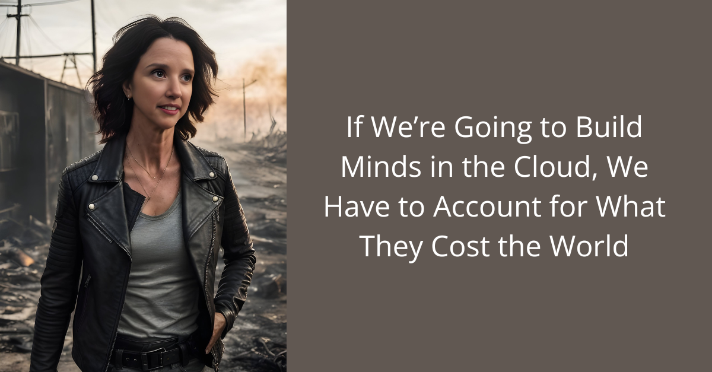

What the World Needs Now (January 2026)

January is when institutions tell themselves stories.
Budgets reset. Strategies relabel. New technologies are announced as if the calendar itself grants permission to think differently. In education and AI, the dominant story right now is still scale: more platforms, more data, more automation, more “intelligence”.
But underneath that story is a quieter pressure that won’t go away this year.
Not metaphorical energy. Actual electricity. Cooling. Heat. Grid capacity. Water. Cost. Reliability.
If you’re building or buying anything “in the cloud” in 2026 — schools, AI systems, learning platforms, assessment tools — this is no longer a background concern. It is the constraint.
So the question we need to ask has changed.
Not “What can this system do?” But:
“What does this capability cost in energy, in heat, in human attention — and is it worth it?”
From capability to capability-per-kilowatt-hour
For decades, we’ve measured progress in education and technology by outputs:
grades
engagement
speed
scale
performance benchmarks
What we haven’t measured well is efficiency in the deepest sense.
In infrastructure terms, efficiency isn’t about shaving milliseconds. It’s about how much useful work we get for the energy we spend.
In 2026, this matters because:
data centres now compete with cities for power
cooling is becoming a limiting factor, not a detail
AI systems increasingly run continuously, not occasionally
education platforms are no longer “lightweight” web tools — they are persistent computational environments
The uncomfortable truth is this:
We have learned how to build very powerful systems. We have not learned how to build proportionate ones.
Better wiring beats bigger systems
There is an assumption baked into many procurement and design decisions: that improvement comes from adding more.
more features
more automation
larger models
more always-on intelligence
But in both education and AI, the biggest gains I’m seeing don’t come from scale. They come from structure.
Clear roles. Well-designed hand-offs. Thoughtful orchestration. Systems that know when not to act.
In schools, this looks like:
fewer platforms, used coherently
clear boundaries between human judgement and machine assistance
learning designs that privilege pacing, reflection, and relationship over constant activity
In AI systems, it looks like:
smaller components that cooperate rather than one monolith doing everything
systems that route work intelligently instead of brute-forcing it
architectures that prioritise reliability and clarity over raw throughput
In both cases, the pattern is the same:
Better relationships inside the system reduce waste outside it.
Less wasted attention. Less wasted computation. Less wasted energy.

Why this matters for education specifically
Schools sit at a strange intersection.
They are being encouraged to adopt more AI, more platforms, more “digital transformation” — often without any discussion of infrastructure cost, energy impact, or long-term sustainability.
At the same time, schools are places where we are meant to model:
restraint
judgement
care
stewardship
If the systems we bring into learning environments are:
opaque
endlessly hungry for compute
poorly governed
designed to scale without limit
…then we are teaching the wrong lesson, no matter how impressive the demo.
The future of education in the cloud is not about making schools more “high-tech”.
It’s about making them:
more intentional
more proportionate
more humane
more sustainable — technically and emotionally
The question I’m holding into 2026
Here is the question I think leaders, commissioners, technologists, and educators need to sit with this year:
How much capability do we actually need — and how carefully can we deliver it?
Not the maximum. The right amount.
Because the systems we build now will quietly shape:
how children experience intelligence
how teachers experience authority and support
how institutions consume energy and attention
how seriously we take our responsibility to the future
January is a good time to stop adding things.
And start designing how they relate.
Building Schools in the Cloud has never been about chasing the newest tools or automating education for its own sake. It’s about designing learning environments that are coherent, humane, and sustainable — technically, emotionally, and institutionally.
In 2026, that means asking harder questions about infrastructure, energy, and proportion. It means choosing systems that are well-wired rather than over-scaled, and architectures that support good judgement rather than replace it.
If we’re going to build schools in the cloud, we owe it to young people to build them with care — not just for what they can do today, but for what they cost the world tomorrow.
Join the NLN here.
First published in Building Schools in the Cloud on LinkedIn, 25 January 2026.